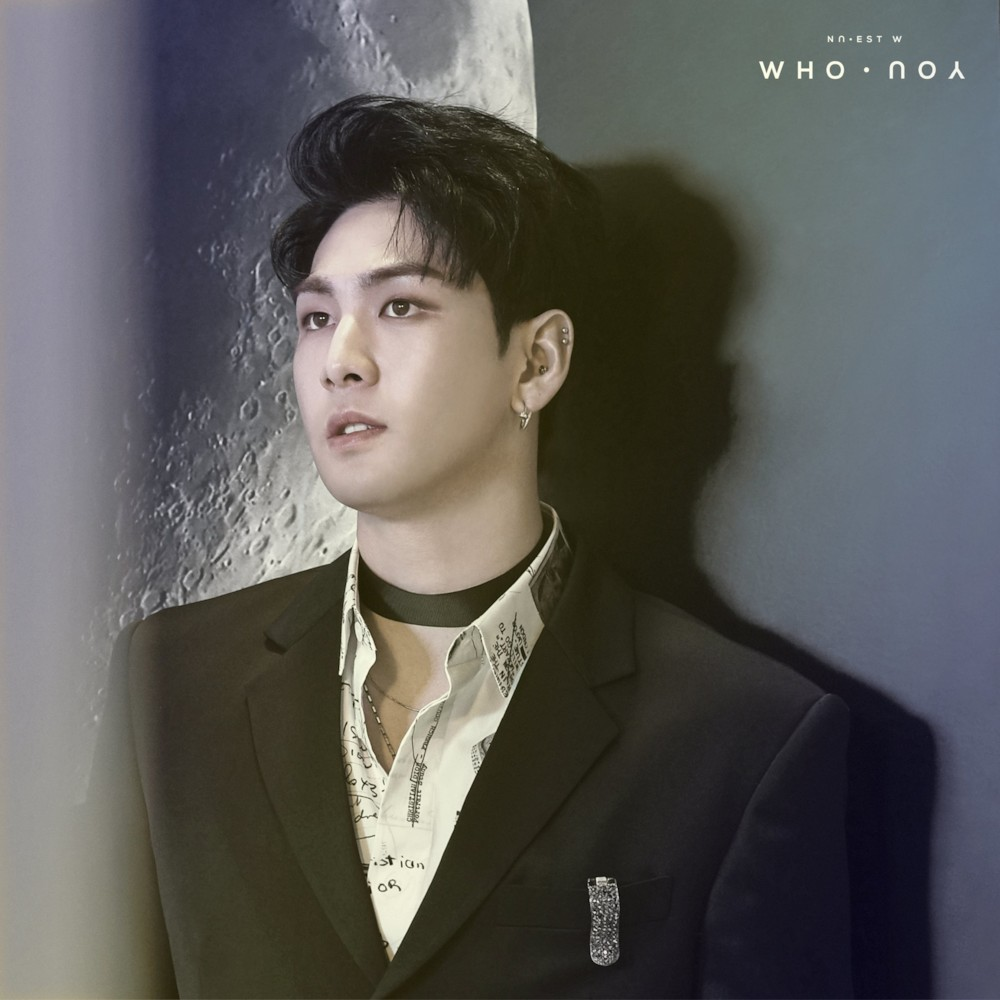

음역대가 높은 미성의 파워보컬로, 뉴이스트 활동곡의 후렴구와 애드리브를 전담하다시피 한다. 다른 보컬들인 민현, 렌의 음역도 상당히 높은 편이라 뉴이스트 곡들은 전체적으로 음역이 상당히 높은 편인데[9] 그 중에서도 메인보컬답게 단연코 독보적인 존재감을 나타낸다. 특히 미니 4집 '여왕의 기사', 미니 5집 'Love Paint', 'R.L.T.L' 같은 곡들에서 백호의 목소리 자체가 곡에 드라마틱한 효과를 주며 제대로 빛을 발한다. 라이브도 AR에 필적할 정도로 굉장히 안정적이다. 분명 라이브 무대임에도 성대에 CD를 튼 수준으로 한 번 정제된 것 같은 목소리가 나온다.
아이돌 메인 보컬에 있어 제일 필요하다 여겨지는 음역대, 성량 그리고 독특하면서도 장르를 타지 않는 음색을 가진 것이 큰 장점으로, 어떤 곡을 갖다줘도 찰떡같이 소화해낼 수 있다. 이는 역설적이게도 프로듀스 101 시즌2의 갖가지 거짓 스포로 증명되었는데, 강동호가 2차 포지션 평가 보컬 포지션의 모든 곡에 스포일러로 들어가 있었음에도[10] 뭘 부른다고 해도 위화감이 없어서 호르미온느, 홍길동호, 동호 단독 콘서트 등등의 드립이 흥하기도 했다.# 3차 컨셉트 평가에서도 온갖 곡의 스포일러에 다 들어가 있자 이번에는 앙콘을 하냐는 드립이 나왔다.
플레디스 입사 오디션에서는 버즈의 My Love를 불렀다고 데뷔초에 슈키라에서 언급했다
